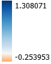

The US Clean Air Act Amendments of 1990 established a system for reducing acid rain in the US. This law resulted in a 40% reduction in sulfur dioxide emissions, and drastically reduced acid rain in the US.
This map seeks to visualize how and where pH changes have occured in the US between 1988 & 2018. pH data is from the National Atmospheric Deposition Program National Trends Network, which produces yearly pH estimates for the contiguous United States. pH change was calculated in QGIS by subtracting 2018 pH levels from 1988 pH levels.
Legend
pH Change 1988 - 2018:
1988 & 2018 pH Layers: